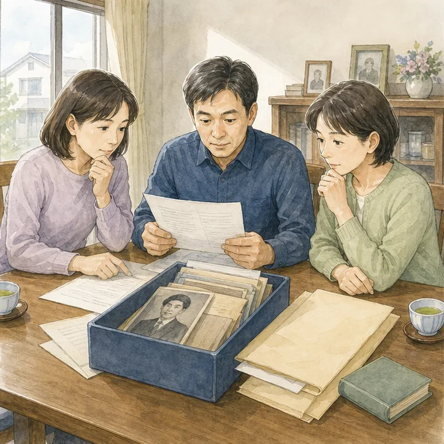
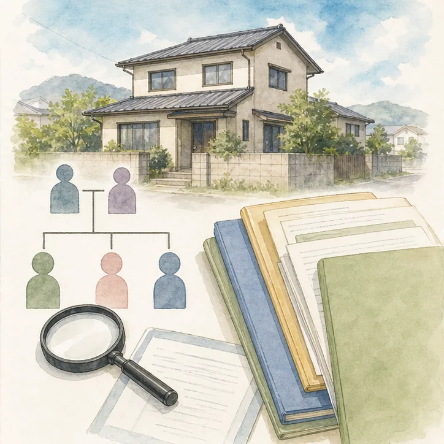
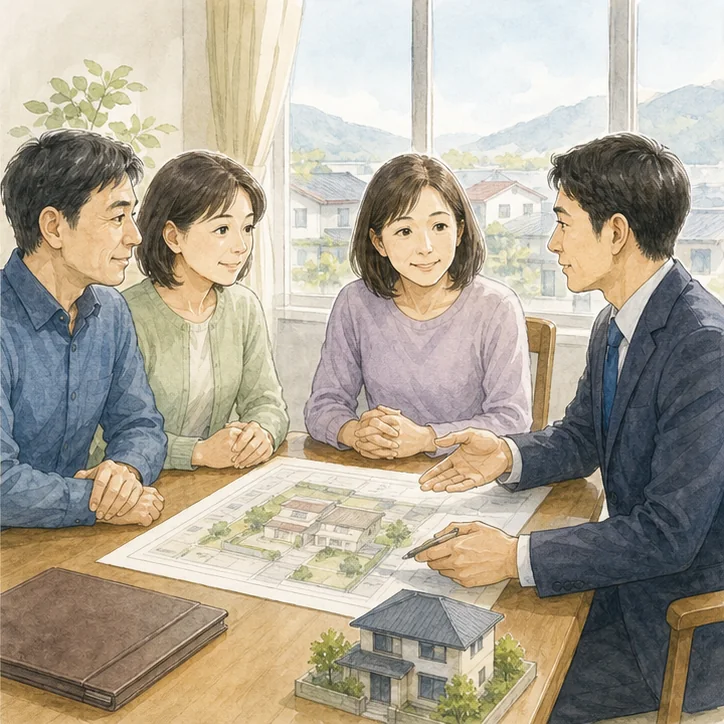

相談のきっかけ
父が亡くなってから五年。母はすでに別の住まいへ移り、磐田市内の実家は空き家になっていました。固定資産税は長男が払い続けていたものの、兄弟は「税金を払っている人が所有者なのだろう」と考え、登記を確認していませんでした。売却の相談を始めた段階で、土地も建物も父名義のままであることが分かりました。
この事例で大切なのは、ひとつの資料や誰かの記憶だけで結論を出さないことです。実家の問題は、登記上の権利、税金、建築や道路の条件、現地の状態、家族の希望が重なって見えにくくなります。そこで、分かっている事実、推測、未確認事項、専門家へ質問する事項を別々に記録します。相続登記が未了の実家についても、「たぶん大丈夫」「昔からこうだった」という言葉を確認済みの事実として扱わないことが、後のトラブルを減らします。
最初に止めたこと――片付けや査定を急がない
相続登記が終わっていなければ、相続人全員の関係を確認せずに売却を進めることはできません。年月がたつほど、その間に相続人が亡くなって次の相続が発生し、関係者が増えることがあります。税金の支払者、鍵の管理者、登記名義人は同じとは限らないため、事実を分けて整理する必要があります。そのため、最初の打合せでは「いつ売れるか」「いくらになるか」を先に決めず、判断の前提となる資料をそろえることにしました。急いで動く必要がある項目と、家族で時間をかけてよい項目も分けます。
確認の順番は、まず物件を特定し、次に誰の不動産かを確かめ、権利や法令上の条件を調べ、最後に現地の状態を見る流れが基本です。順番を逆にして片付けや査定から始めると、処分してはいけない書類を捨てたり、売却できる人が決まっていないまま費用を使ったりすることがあります。調査で問題が見つかること自体は失敗ではありません。早い段階で見つけ、誰に何を確認するかが分かることが成果です。
とくに相続登記が未了の実家では、問題が一つだけに見えても、名義、道路、境界、建物、家財、管理など別の論点が隠れていることがあります。ひとつを解決したあとに次の問題が見つかると、家族は「また止まった」と疲れてしまいます。最初に全体を薄く広く確認し、優先順位をつける方が現実的です。
手元資料を一か所へ集める
今回、最初に探した資料は、固定資産税納税通知書、登記事項証明書、父の出生から死亡までの戸籍、母と子どもたちの戸籍、遺言書の有無、過去の遺産分割協議書、権利証や登記識別情報、家と土地の評価証明書です。全てそろっていなくても相談は始められます。ある物、ない物、存在が分からない物に分けるだけで、次に取得する資料が見えてきます。
古い実家では、書類が仏壇、たんす、金庫、押し入れ、銀行の貸金庫、親族宅などへ分散していることがあります。封筒から書類だけを抜くと、送付元や日付が分からなくなるため、確認が終わるまでは封筒ごと保管します。原本は無理に書き込まず、家族共有用には写真や写しを使います。
固定資産税通知書は有力な入口ですが、それだけで所有権や境界を証明するものではありません。課税される人と登記名義人が違う場合、非課税の土地が載らない場合、建物の表示が現況と異なる場合があります。別の資料と照合する前提で扱います。
机上調査で確認したこと
土地と建物それぞれの名義、地番、家屋番号、抵当権の有無を確認しました。通知書に載る土地の数と登記上の筆数も照合し、家の敷地と思っていた範囲に別名義の土地が混ざっていないかを確認しました。
机上調査では、法務局や自治体などから得られる公開情報を使います。ただし、資料には作成時点、目的、精度の違いがあります。公図の線をそのまま現地境界と考えたり、地図上の道路幅から建築判断をしたりせず、「資料から分かること」と「現地または行政確認が必要なこと」を明確に分けます。
確認結果は、問題あり・問題なしの二択ではなく、確認済み、追加資料が必要、現地確認が必要、専門家判断が必要、家族で決めること、という区分で整理しました。色だけに頼らず言葉でも状態を示すことで、遠方の家族にも誤解なく共有できます。

現地でしか分からないこと
郵便物、雨漏り、通水、庭木、境界標、残置物、鍵の本数を確認しました。登記手続きの間も空き家管理は続くため、近隣への連絡方法と月ごとの点検担当を決めました。
現地確認では、敷地の外から分かること、所有者の許可を得て敷地内で確認すること、建物内部で確認することを分けます。隣地へ無断で入ったり、設備を勝手に動かしたりしません。危険がある場所は専門業者へ任せ、目視だけで安全や性能を保証しないようにします。
写真は「問題のある場所だけ」を撮るのではなく、建物四方向、道路、玄関、各室、設備、庭、境界付近を一定の順番で撮影します。全体写真と近接写真を組み合わせると、後から場所を特定しやすくなります。撮影日と確認者も残します。
家族会議で決めたこと
兄弟全員が同じ資料を見られるよう、確認できた事実、未確認事項、専門家へ質問する事項を一枚に整理しました。売却価格の話より先に、誰が相続人で、誰がどの手続きを担当し、費用をどう分担するかを決めました。
家族会議では、最初に各人の希望を聞いたあと、希望を実現する条件へ言い換えます。「残したい」なら、誰が使い、誰が管理し、年間いくらまで負担できるか。「売りたい」なら、いつまでに、どの条件を解消し、家財や思い出をどう残すかを具体化します。
会議の記録は、決定事項だけでなく、保留理由、次の担当者、期限、必要資料を残します。欠席者へ口頭で伝えるだけでは認識がずれるため、同じ資料を共有します。一度で結論が出ない場合も、次回までに確かめることが決まれば前進です。
約2,000字時点：ここまでの整理
相続登記が未了の実家について、ここまでに確認したのは、物件を特定する資料、権利関係、家族が把握する経緯、現地の管理状態です。この段階ではまだ売却価格を決めていません。先に確認順を整えることで、不要な費用や家族間の誤解を減らします。
ふじがおか実家カルテは、価格を出す査定書ではありません。売る、残す、貸す、解体するという結論を誘導せず、その前に必要な確認を並べます。相談後に必ず売却する必要はなく、家族会議の材料、専門家へ相談するための質問表、空き家管理の引継書としても利用できます。価格査定が必要になったときも、支障と資料が整理されていれば、条件の違う査定を比較しやすくなります。
専門家へつなぐ順番
司法書士に相続人調査と相続登記の進め方を確認し、不動産会社は登記完了後に必要となる売却資料と物件上の支障を整理しました。税務上の判断が必要な場合は税理士へ確認する前提も共有しました。
専門家へ相談するときは「全部お願いします」と丸投げするより、対象物件、困っていること、確認済み資料、希望する期限をまとめます。相談先によって担当範囲が異なるため、誰が全体の進行を管理するかも決めます。
司法書士は登記、土地家屋調査士は表示登記や境界・測量、税理士は税務、弁護士は法的紛争、建築士は建築上の調査など、それぞれ役割があります。行政窓口でしか確認できない制度もあります。不動産会社が他の専門家の判断を代行することはできません。
選択肢を同じ条件で比べる
母が相続する案、子どもが共同で相続する案、売却方針を決めて代表者が相続する案を比較しました。共有名義は将来の意思決定が複雑になるため、現在だけでなく次の世代まで見据えて検討しました。
選択肢は初期費用だけでなく、一年後、五年後の管理負担も比較します。固定資産税、保険、草木、修繕、交通費、専門家費用、家族の時間を記載します。売却する場合も、仲介、買取、解体後売却など条件が異なります。
数字にできない要素として、親の希望、家族の利用予定、近隣との関係、思い出の品、地域とのつながりがあります。金額と気持ちを対立させず、別欄で可視化したうえで判断します。
実際に決めた次の一手
相続人の範囲を確定し、家族全員で遺産分割の方針を確認したうえで相続登記を申請。空き家管理を続けながら道路や境界も調べ、登記完了後に売却するかを改めて判断する順番になりました。
今回の整理では、問題を全て一度に解消することを目標にしませんでした。売却や活用の判断を妨げる項目から順に、担当者と期限を決めました。確認結果が変われば、選択肢や日程も更新します。
相談後は、集めた資料を家族が分かる場所へ保管し、原本の所在を一覧にしました。将来担当者が変わっても経緯を追えるよう、行政や専門家へ確認した日、窓口、回答の要点を残しました。

費用と時間を見積もる方法
相続登記が未了の実家を整理するときは、最終的な売却代金だけでなく、確認と維持に必要な費用を時系列で並べます。資料取得、専門家相談、交通、庭木や清掃、保険、固定資産税、修繕、家財整理などを、今月必要なもの、方針決定後に必要なもの、実施するか未定のものに分けます。見積額が不明な項目をゼロ円として扱わず、「未確認」と記載することが大切です。
時間についても、家族が希望する期限と、行政・登記・測量・片付け等に実際に必要な期間を分けます。期限を先に決めて手続きを無理に当てはめると、確認不足のまま契約へ進むおそれがあります。反対に、全てを完璧にしてから動こうとすると管理負担が続きます。売却や活用の判断に影響する項目から確認し、並行して進められる作業を見つけます。
見積書を比べる場合は、総額だけでなく作業範囲、追加費用が生じる条件、成果物、キャンセル条件を確認します。例えば「現地確認」「測量」「家財処分」は、同じ名称でも含まれる作業が違います。誰が鍵を預かり、写真や報告書をどう受け取り、近隣対応を含むかも確認します。安さだけで選ばず、この家で必要な作業が含まれているかを基準にします。
家族で共有する記録の作り方
記録は専門用語を並べるのではなく、資料名、確認した日、分かったこと、まだ分からないこと、次の担当者、期限の六項目で作ると引き継ぎやすくなります。画像ファイルには撮影日と場所が分かる名前を付け、原本の保管場所も記載します。メールやメッセージだけに重要な回答を残さず、要点を一つの表へ転記します。
家族の意見も「賛成・反対」だけで記録しません。希望する結論、その理由、負担できる費用、担当できる作業、判断に必要な追加情報を書きます。意見が変わることを責めず、何の情報によって判断が変わったかを残せば、後から話し合いを振り返れます。
個人情報を含む登記、戸籍、税務、介護関係の資料は、共有相手と保存場所を限定します。不要になった写しの処分方法も決めます。専門家へ送るときは、必要な資料だけを安全な方法で渡し、SNSや不特定多数が閲覧できる場所へ掲載しません。
同じ状況の方が確認するチェックリスト
次の項目は、相続登記が未了の実家で最初に確認したい事項です。すべてを自分だけで判断する必要はありません。分からない項目には印を付け、カルテや専門家相談の質問に使ってください。
- 登記名義人と固定資産税の宛名を混同しない
- 相続人の範囲を戸籍で確認する
- 土地と建物を別々に確認する
- 遺言書と過去の協議書を探す
- 手続き中の空き家管理者を決める
- 法務・税務は専門家へ確認する
判断を急ぐ前に覚えておきたいこと
相談事例は個人を特定できないよう、複数の相談に共通する論点を再構成しています。実際の住所、氏名、登記内容、家族関係は一件ごとに異なります。この記事と同じ状況に見えても、法律・税務・建築・農地等の結論が同じとは限りません。行政窓口や専門家へ確認するときは、一般論だけでなく対象物件の資料を示し、個別に判断を受けてください。
実家の相談では、問題が見つからないことより、分からない点が明確になることに価値があります。未確認事項を隠したまま進めると、契約直前や引渡し後のトラブルにつながります。分からないことを分からないまま記録し、確認方法を決める姿勢が大切です。
家族だけで抱え込み、完璧な資料をそろえてから相談しようとすると時間がたちます。住所、固定資産税通知書、写真など、今ある手がかりから始めて構いません。ふじがおか実家カルテでは、売却未定の段階で次に確認する順番を整理します。
なお、制度や行政の取扱いは変更されることがあります。以前に親族や近隣が同じ方法で進めたとしても、現在の対象物件にそのまま当てはまるとは限りません。古い回答やインターネット上の一般論だけに頼らず、手続きを実行する時点で最新情報を公式窓口へ確認してください。確認した日付と担当窓口を記録しておくと、家族や次の専門家へ説明しやすくなります。
相談前に分からない点が残っていても問題ありません。分からない理由と、最後に確認した時期を伝えるだけでも調査の入口になります。資料が見つからない場合は、どこを探したかも記録すると同じ作業の繰り返しを防げます。
